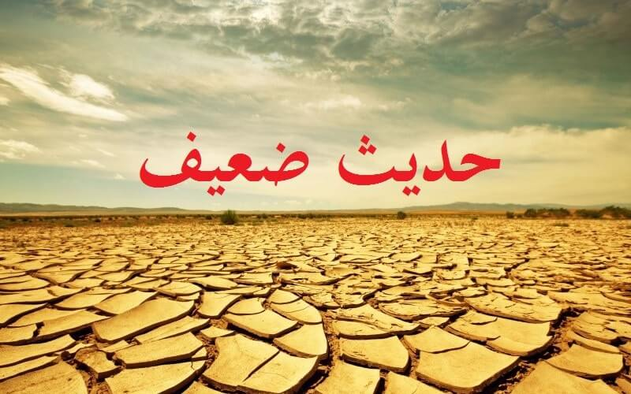

FAKTA-FAKTA IBNU SINA
Profile Singkat Ibnu Sina
Ibnu Sina, memiliki nama panjang Abu Ali Husain ibn Abdullah ibn Sina (sering dilatinkan jadi Avicenna di Barat).
Karena besarnya kontribusinya terhadap dunia kedokteran lewat masterpiece-nya, Canon of Medicine, ia dijuluki “Bapak Kedokteran”.
Bahkan kalau Anda membaca sendiri Canon of Medicine...
Baca selengkapnya >>>>>
AL-KHAWARIZMI
Ilmuwan Islam Penemu Angka Nol dan Algoritma
Al-Khawarizmi diperkirakan hidup di pingigiran Bagdad pada masa khalifah Al-Ma’mun (813-833M) dari dinasti Abbasiya.
Khalifah Al-Ma’mun menjadi sahabat karibnya yang menjadikan Al-Khawarizmi sebagai anggota Baitul Hikmah di Bagdad, yakni sebuah
lembaga penelitian ilmu pengetahuan yang didirikan oleh Khalifah Harun ar-Rasyid...
Baca selengkapnya >>>>>

40 Hadits Tentang Pemimpin
Dalil boleh membatalkan sumpah jabatan, untuk mengerjakan sesuatu yang lebih bermanfaat bagi umat:
Diriwayatkan oleh Muslim, 1650, dari Abu Hurairah radhiallahu’anhu berkata, Rasulullah sallallahu’alaihi wa sallam bersabda:...
Baca selengkapnya >>>>>